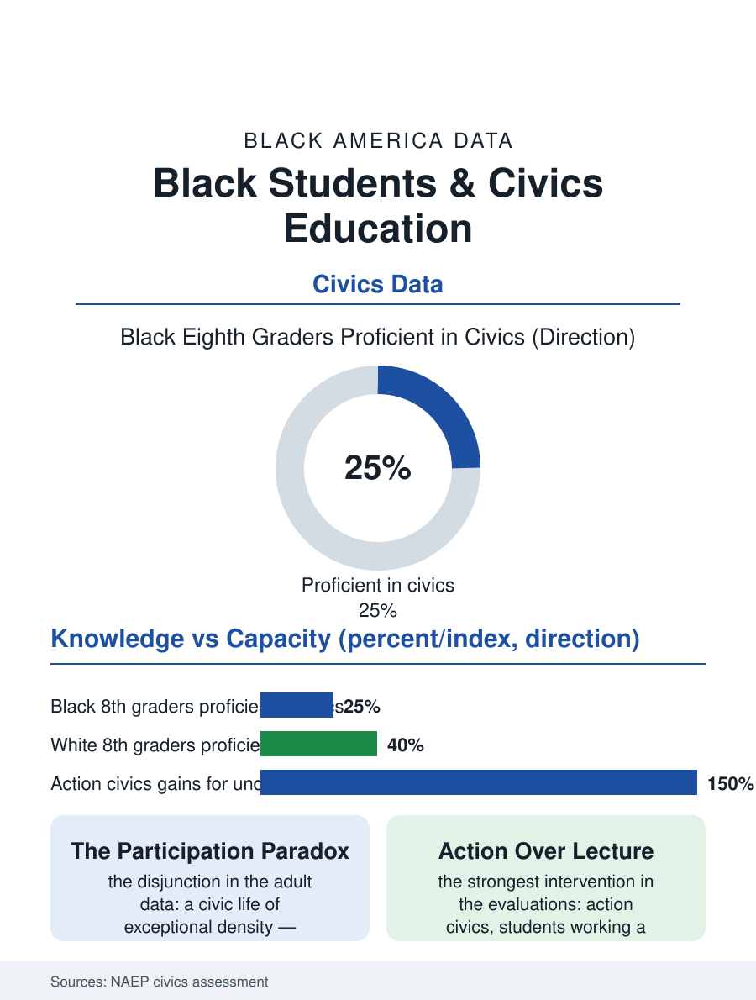

Black Education
The Test and the Practice: Black Students and Civics
A quarter of Black eighth graders test proficient in civics while their communities post the nation's densest civic life: the test and the practice are different files. The civics file.

Civics is the school subject whose test the whole country is failing, and Black students' scores on the national civics assessment run below the national average in the pattern of the other tested subjects, with a difference: the civics file measures not only knowledge but the civic behaviors, registration, news habits, community participation, that the adult files record Black Americans performing at rates their test scores would not predict. This article reads the civics file.
The Knowledge Gap and the Participation Paradox
The National Assessment of Educational Progress administers civics at grades four, eight, and twelve, and the eighth-grade file, the fullest, shows roughly a quarter of Black students reaching the proficient level against two-fifths of white students, with the below-basic share correspondingly heavier, gaps that track the reading file's distribution since the civics test is substantially a reading test in civic costume. The assessment's background questionnaires add the texture: Black students report civic learning opportunities at rates close to the national pattern, the classroom discussion of current events, the mock trials and student government of the experiential curriculum, distributed more evenly than the tested achievement. The paradox arrives in the adult data: the civic participation files, the volunteering and community organization rates, the church-based civic infrastructure of the religion file, and the ballot-box participation the adult chapters record, show a Black civic life of exceptional density built substantially by citizens the school subject's test would have failed, a disjunction the civics researchers handle by distinguishing civic knowledge, the test's province, from civic capacity, the networks and habits that actually move a community's participation, in which the Black tradition's schooling has always run through the church, the lodge, and the freedom struggle's own curriculum as much as through the textbook.
What the Curriculum Carries
The civics curriculum's content is the file's contested heart in a way the math file's never is, because the subject's material is the nation's story about itself, and the Black student's civics education has always run on two tracks: the textbook's account and the community's, the latter carrying the movement's history as living memory in the families and churches of the very students the test measures. The state standards' treatment of that history varies by jurisdiction in ways the curriculum audits map, and the recent legislative contests over the history curriculum's content have made the civics classroom a front in the culture's larger argument, a development the file records as context for the assessment's meaning: a test whose content is publicly disputed measures alignment with a settlement that has not settled. The experiential evidence is the file's constructive core: the action civics evaluations, students identifying and working a real community problem through the semester, post the strongest engagement and knowledge gains of any civics intervention, with the gains largest for the students the lecture curriculum serves worst, and the model programs' geography, the urban districts and the community organizations' partnerships, places the strongest civics education in the file disproportionately in reach of Black students where the programs have been funded to scale, which the funding data show is not yet far.
The Subject's Real Report Card
The civics file closes with the field's own reframing, which the adult data compel: if the subject's purpose is the production of citizens, its report card is the adult civic file, where the Black community's performance, the organizational density, the mutual aid infrastructure, the participation sustained against the documented obstacles the voting file records, is the strongest in the nation's data. The school test measures the vocabulary of the system; the community taught the practice of it, in institutions the school file does not count, through a curriculum of necessity the test makers did not write. That is not an argument against the knowledge, the file is careful to say: the vocabulary matters, the students shortchanged on the Constitution's mechanics are shortchanged, and the proficiency gap is a real entry in the opportunity ledger. It is an argument for reading the two files together, the school's and the street's, before pronouncing on the civic education of a people whose civic performance, under the heaviest headwinds in the data, kept a democracy's promises better than the democracy kept its promises to them. The assessment counts the proficiency at a quarter. The republic counts the participation every cycle. The civics file holds both numbers and declines, on the evidence, to call only one of them education.
More in Black Education
Black Educational Attainment: High School Parity, the College Gap
About 89 percent of Black adults hold a high school diploma and one in four holds a bachelor's degree or higher — the attainment ladder, the college completion gap, and the generational trend.
Historically Black Colleges and Universities: Enrollment and Degrees
More than 100 HBCUs enroll roughly 290,000 students and award about one in six Black bachelor's degrees — an outsized share from a small sector. The federal education data.
Black College Enrollment: 2.4 Million Students
About 2.4 million Black students are enrolled in American colleges — nearly two-thirds of them women. The NCES enrollment data by sector, level, and trend.
Source: National Assessment of Educational Progress, Civics assessment; action civics program evaluations; civic participation survey data.